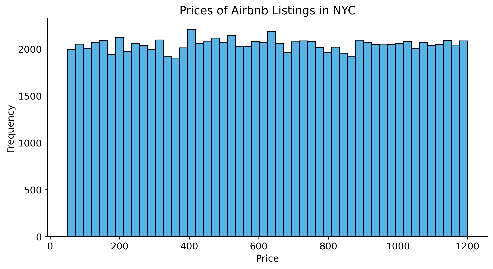
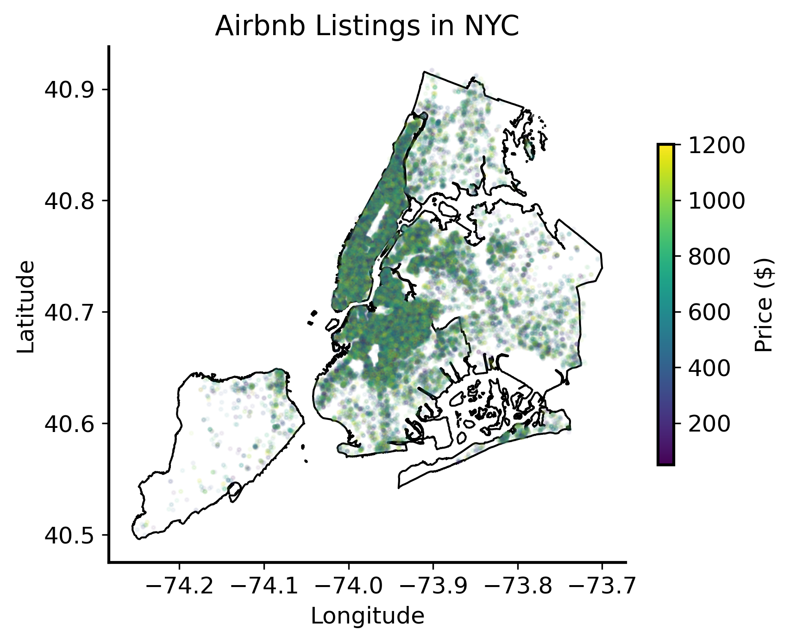
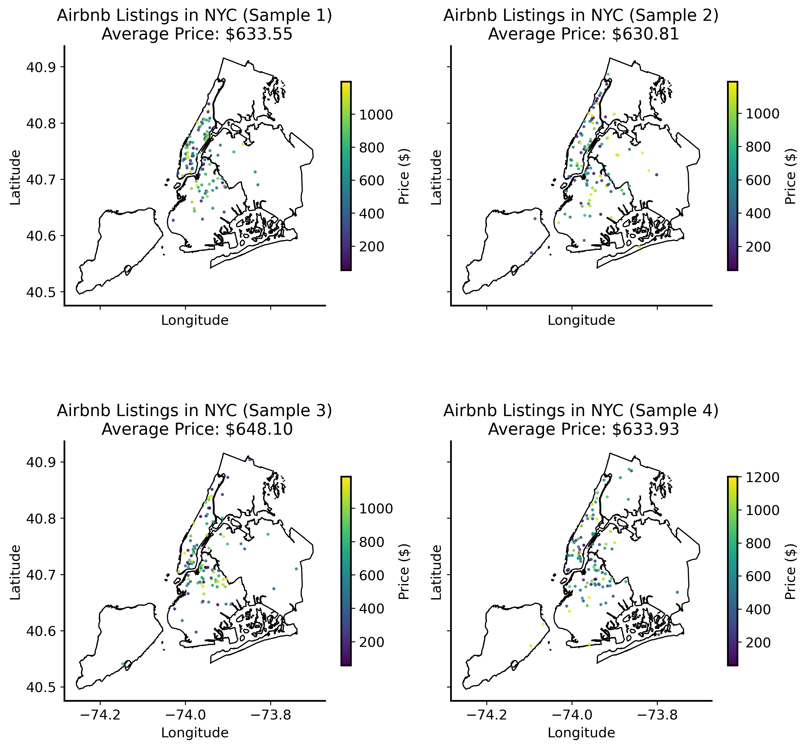
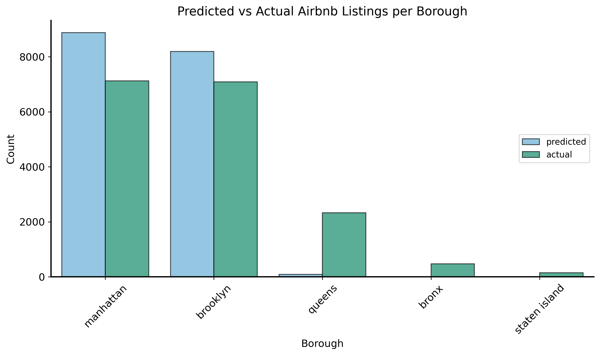

to build a strong intuition about data, where it comes from, and what questions it can answer.
to learn the basic computational skills needed to manipulate and analyze data. Working with data also helps with (1)!
Why statistics?
Statistics is, essentially, the study of data and how to use it. People argue about the purpose of statistics, but basically you can do 3 things with data:
description
inference
prediction
Description
Let’s load in some data and take a look at it.
The dataset contains Airbnb listings in New York City, including prices, locations, and other features.
Description
id
name
host_id
host_identity_verified
host_name
borough
neighbourhood
lat
long
country
...
service_fee
minimum_nights
number_of_reviews
last_review
reviews_per_month
review_rate_number
calculated_host_listings_count
availability_365
house_rules
license
0
1001254
Clean & quiet apt home by the park
80014485718
unconfirmed
Madaline
brooklyn
Kensington
40.64749
-73.97237
United States
...
$193
10.0
9.0
10/19/2021
0.21
4.0
6.0
286.0
Clean up and treat the home the way you'd like...
NaN
1
1002102
Skylit Midtown Castle
52335172823
verified
Jenna
manhattan
Midtown
40.75362
-73.98377
United States
...
$28
30.0
45.0
5/21/2022
0.38
4.0
2.0
228.0
Pet friendly but please confirm with me if the...
NaN
2
1002403
THE VILLAGE OF HARLEM....NEW YORK !
78829239556
NaN
Elise
manhattan
Harlem
40.80902
-73.94190
United States
...
$124
3.0
0.0
NaN
NaN
5.0
1.0
352.0
I encourage you to use my kitchen, cooking and...
NaN
3 rows × 26 columns
Now there’s a lot you can do, but let’s start by visualizing the prices of listings.

Computing statistics like the mean (average), standard deviation (average distance from the mean), and quartiles (top 25% and bottom 25%) is easy.
count 102316.000000
mean 625.291665
std 331.677344
min 50.000000
25% 340.000000
50% 624.000000
75% 913.000000
max 1200.000000
Name: price, dtype: float64
We can even use specialized libraries to make use of the geographic information in the data. For example, we can use the geopandas library to plot the locations of listings on a map of New York City.

Let’s look at our Airbnb data again. What if instead of looking at the entire dataset, we only looked at a small “sample” or subset of the data?

Sample \(\neq\) Population
Population
the entire set of data that you are interested in.
Sample
a subset of a population.
A random sample is a sample that is selected randomly from the population.
Example: Airbnb listings in New York City
We want to know the average price of Airbnb listings in New York City.
population: all Airbnb listings in New York City
sample: a smaller subset of those listings, which may or may not be representative of the entire population.
What is the population?
Flexible definition:
Average price of all short-term rentals in New York City? Population: all rentals (not just Airbnb listings) in New York City.
Often, the population is actually more abstract or theoretical
Average price of all possible Airbnb listings in New York City? Population: all potential listings, not just the ones that currently exist.
Descriptive statistics are useful for understanding the data at hand, but they don’t necessarily tell us much about the world outside of the data. For that, we need to do something more.
Quiz: restaurant survey
Inference
What if we want to answer questions about a population based on a sample?
This is where inference comes in.
Use the given sample to infer something about the population.
How do we do this if we can’t ever see the entire population?
Need a link which connects the sample to the population
Treat the sample as the outcome of a data-generating process (DGP).
There is always a DGP
A data-generating process (DGP) is a theoretical construct that describes how data is generated in a population.
Encompasses all the factors that influence the data (incl. the mechanisms and relationships between variables).
There has to be a DGP, even if we don’t know what it is.
The DGP is the process that generates the data we observe.
The full, true DGP is usually unknown.
We can make assumptions about it and use those assumptions to draw inferences about the population (in the case that our assumptions are correct).
Statistical models
When the full DGP is too complicated / unknown, we use a model
simplified mathematical representation of the DGP
allows us to make inferences about the population based on the sample
ultimately sort of a guess – about where your data come from.
Example: Airbnb listings.
Assume that the all Airbnb listings in New York City are equally likely to be in any one of the five boroughs.
Probability of a listing being in Manhattan is 1/5, the probability of it being in Brooklyn is 1/5, etc.
Then we can look at the actual sample of listings and see if it matches our assumption:
Question: “If we assume that all boroughs are equally likely to produce each listing, how likely is it that we would see the distribution of listings that we actually observe?”
question about the probability of the sample, given a certain model of the DGP
it intuitively seems unlikely that we would see so many more listings in Manhattan and Brooklyn than in the other boroughs if all boroughs were equally likely to produce listings.
Evaluating models
What should we do now?
Now that we realize our sample is very unlikely under our model, then perhaps we should reconsider our model.
Model is just a “guess” about the DGP, while the sample is real data that we have observed.
Unlikely data or unlikely model?
There are two main culprits when we see a sample that is unlikely under our model:
The sample! Think of this as “luck of the draw”. This is only really a risk if your sample is small or systematically biased in some way. Usually if you collect enough data, the sample will start to look more like the population. If you flip a coin 5 times, you might get all tails (there’s actually a 3% chance of this happening); if you flip a coin 100 times, there’s virtually no chance that you’ll get all tails (less than 10-30 chance).
The model! This means that our assumptions about the DGP are incorrect or incomplete. This is a more serious problem, and it won’t go away just by collecting more data.
Statistical inference is basically just a bunch of mathematical machinery and techniques that help us to quantify this guesswork precisely and make it rigorous.
Inference requires domain knowledge
Don’t try this at home!
We just said that statistical inference makes guesswork rigorous, but this is not the whole story.
We will always do a much better job of inference if was have a good understanding of the DGP and the context of the data.
This requires domain knowledge and subject matter expertise.
In the Airbnb example:
Assuming that all boroughs are equally likely to produce listings is a pretty bad assumption
Manhattan sees vastly more tourism than the other boroughs
Brooklyn and Queens have by far the most residents according to recent census data.
Prediction
Prediction is the process of using a model to make predictions about unseen (or future) data.
Back to the Airbnb data: we might want to predict which borough a new listing belongs to based on its features (e.g., listing type, review ratings, price, etc.).
To that end we will fit a predictive model to the data. Basic idea of the model:
we assume the features of the listing (e.g., price) are related to the probability of it being in a certain borough
e.g., perhaps more expensive listings are more likely to be in Manhattan
Fitting a model
Models generally have parameters, which are adjustable values that affect the model’s behavior. Think of them like “knobs” you can turn to tune the model to do what you want, like adjusting the volume or the bass/treble on a speaker.
Coin flip has a single parameter: the probability of landing on heads.
If you turn the knob to 0.5, you get a fair coin;
if you turn it to 1.0, you get a coin that always lands on heads;
if you turn it to 0.0, you get a coin that always lands on tails.
Fitting a model means adjusting the parameters of the model so that it best matches the data. This is usually done by minimizing some kind of error function, which provides a measure of how well the model fits the data.
Ok, so the model is around 45% accurate at predicting the borough of a listing.
What is a “good” prediction rate?
For discussion / reflection: What is a “good” prediction rate or accuracy? Is 45% good? What about 60%? 80%? How would you tell?
Model predictions (distribution)
Now let’s take a look at the distribution of the model’s predictions.

It looks like the model is a bit crude (it predicts no listings in the Bronx or Staten Island), but it does at least capture the general trend that listings are more likely to be in Manhattan and Brooklyn than in the other boroughs.
Summary
3 objectives of data analysis: description, inference, and prediction.
Hopefully you now have a better understanding of what statistics is supposed to help you do with data. Of course, we haven’t actually gone into any of the details of how to do anything. (Don’t worry, we’ll get there!)
Up next:
basic programming concepts that are important for data science.
After that we will learn some foundational concepts in probability that will help us think about data and models more rigorously.
From there, the sky is the limit! We’ll cover a wide range of topics, including statistical inference, uncertainty quantification, machine learning, and more.
Since we haven’t learned any programming or statistics yet, we won’t have any real exercises for this lecture. There’s just a quick Assignment 0 to make sure you are set up to run Python code for future assignments.